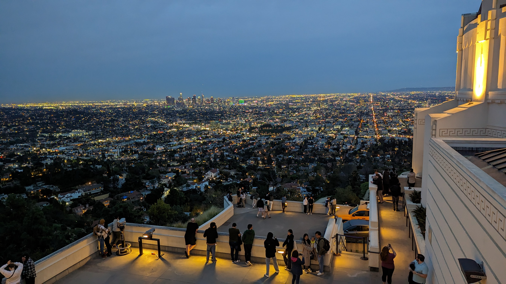
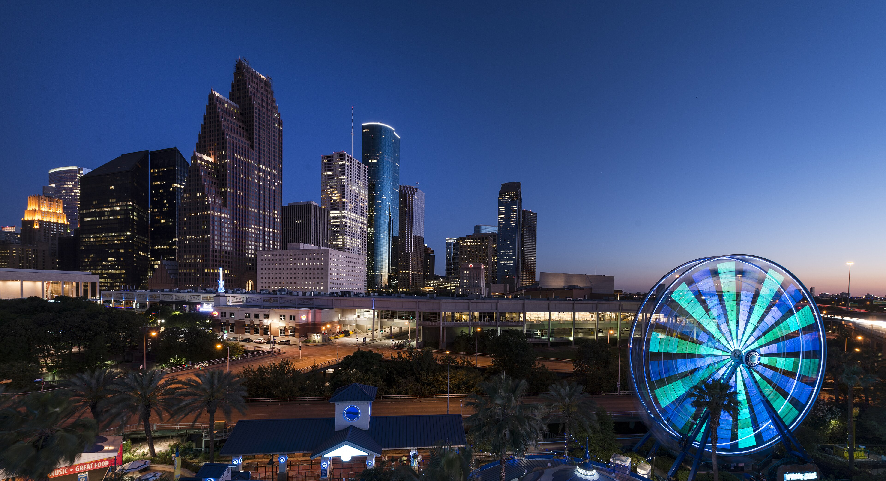

Los Angeles
Los Angeles at night from Griffith Observatory
Photograph by
Rlumstead / Rachel L. Umstead.
Creative Commons Attribution-ShareAlike 4.0 International.
Real city photographs used in this local design mockup. The photos identify the city; they do not depict the example retail listing.

Los Angeles at night from Griffith Observatory
Photograph by
Rlumstead / Rachel L. Umstead.
Creative Commons Attribution-ShareAlike 4.0 International.

Houston, Texas
Photograph by Carol M. Highsmith, from the
Library of Congress, highsm.28347.
Public domain / no known copyright restrictions.
Sources and license terms checked November 14, 2026. Only the active city photographs are included in this handoff.